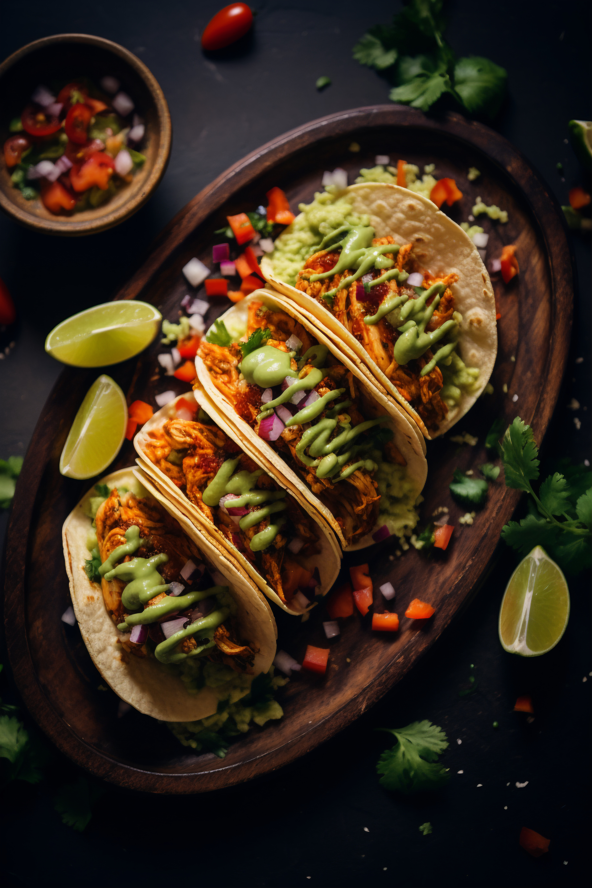

🌮 Classic Mexican Beef Tacos Recipe

 Prep Time: 20 minutes
🕒 Cook Time: 15 minutes
👩🍳 Serves: 4 people (8 tacos)
Prep Time: 20 minutes
🕒 Cook Time: 15 minutes
👩🍳 Serves: 4 people (8 tacos)
Ingredients 🛒
For the Taco Filling
- 500 g (1 lb) ground beef
- 1 medium onion, finely chopped
- 2 cloves garlic, minced
- 2 tbsp olive oil
- 2 tsp chili powder
- 1 tsp ground cumin
- 1 tsp paprika
- ½ tsp oregano
- ½ tsp salt (adjust to taste)
- ½ tsp black pepper
- ½ cup (120 ml) tomato sauce or salsa
For the Tacos
- 8 small corn or flour tortillas
- 1 cup shredded lettuce
- 1 cup diced tomatoes
- 1 cup shredded cheddar or Mexican cheese blend
- ½ cup sour cream
- Fresh cilantro leaves
- Lime wedges (for serving)
👩🍳 Instructions
- Heat olive oil in a pan over medium heat. Add chopped onion and sauté until soft.
- Add garlic and cook for 1 minute until fragrant.
- Add ground beef, breaking it apart with a spoon. Cook until browned.
- Stir in chili powder, cumin, paprika, oregano, salt, and pepper. Mix well.
- Add tomato sauce/salsa and simmer for 5-7 minutes until slightly thickened.
- Warm the tortillas in a dry skillet or microwave.
-
Assemble the tacos: spoon beef filling into each tortilla, then top with lettuce,
tomatoes, cheese, sour cream, cilantro, and a squeeze of lime.
- Serve hot and enjoy!